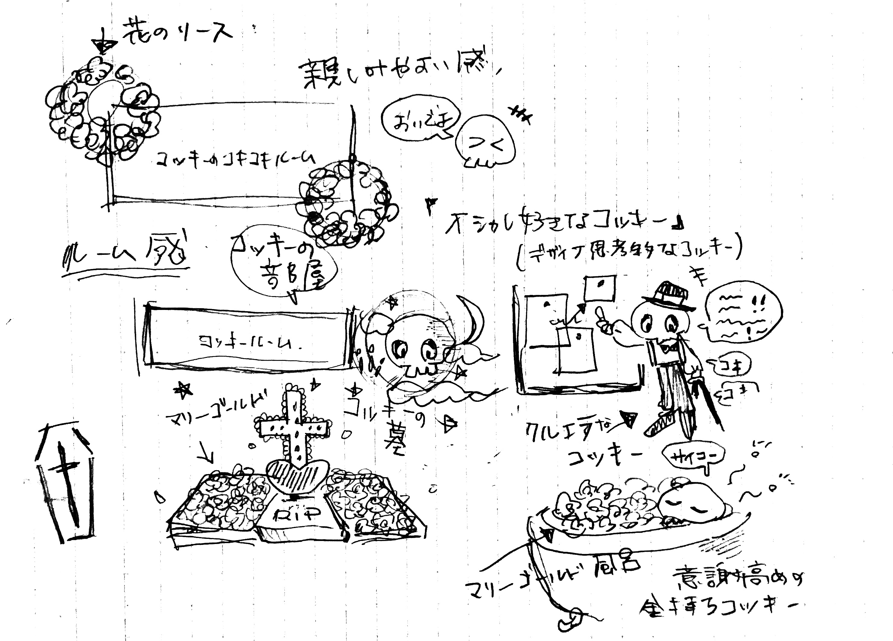
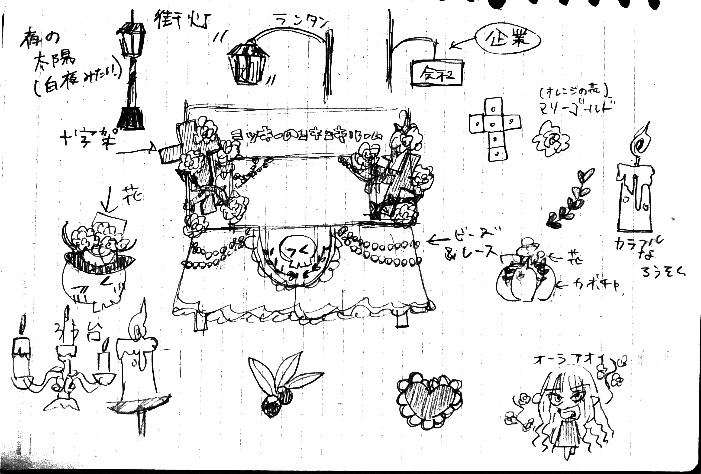
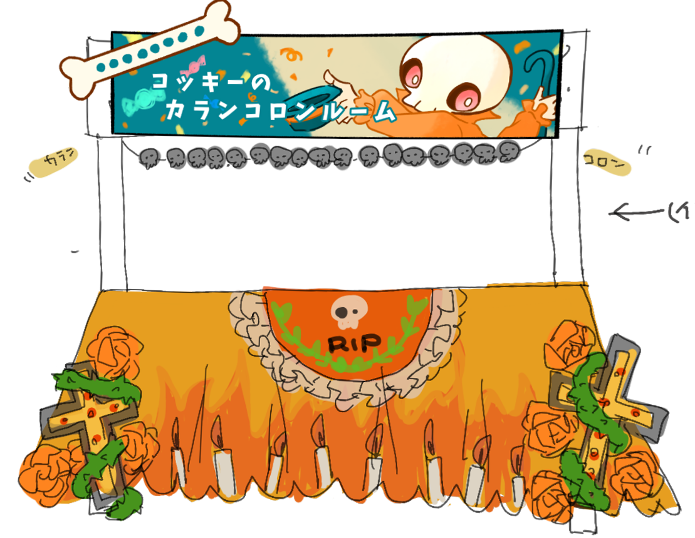
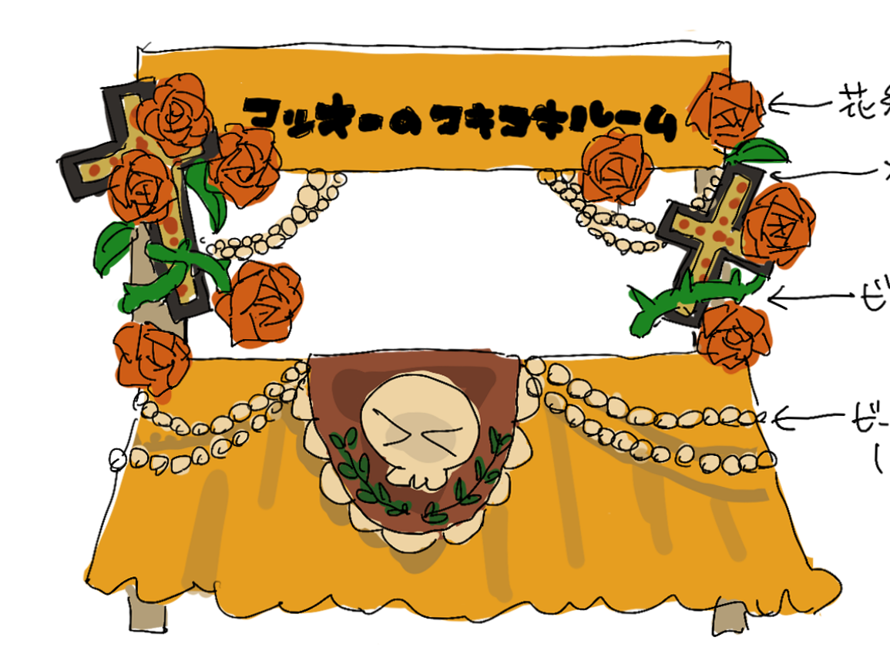
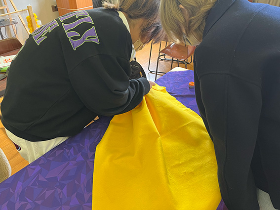
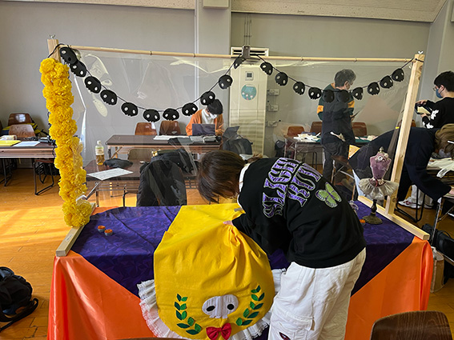
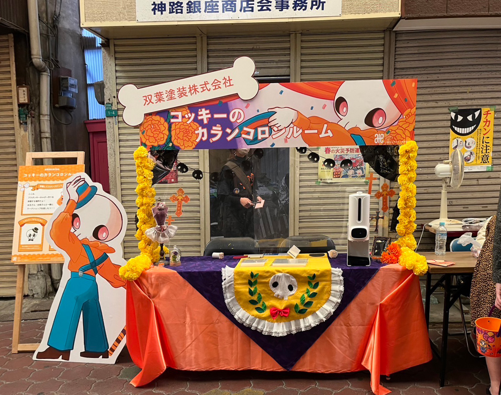
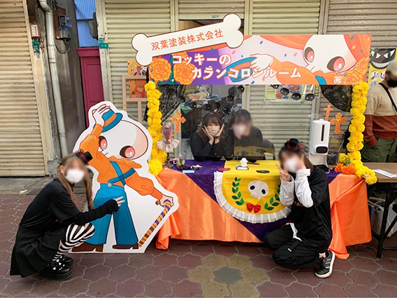

今里ハロウィンストリート
キャラクターの性格から考えるVMD装飾
このプロジェクトは東成しんみちロードの商店街の皆様と東成区生野区のものづくり企業の皆様と協働で、商店街と商店会の集客イベントを行いました。
授業課題 プロジェクト
担当箇所 VMDデザイン
制作期間 2022/9/15~2022/10/29
1.VMDリーダーとしてデザインのアイデア出し
班員と話し合い更に詳しくキャラクターの性格を設定をつけてイラストやキーワードなどでイメージを膨らませアイデアの引き出しをたくさん増やしました。各班に決められたキャラクターをテーマにワークショップを行うブースの装飾を考えます。私は班のVMDリーダーとなりデザイン案を進めていきました。


2.デザイン案のブラッシュアップ
１つ目のデザイン案です。支柱に装飾をたくさん付ける案でしたが安全対策から重量などで壊れる可能性が有りということで装飾を付ける位置で改善点が出ました。お調子者でおしゃれが好きなガイコツのキャラクターということでマリーゴールドのオレンジ色で町や墓地が華やかに彩られる、メキシコの祝祭「死者の日」をモチーフにしました。


3.VMDの装飾作り
班員と話し合いながら3000円の予算で材料を調達しVMDの装飾を作っていきます。


4.完成
当日の朝、商店街で安全対策を考慮しながらVMDの飾り付けをして完成です。

